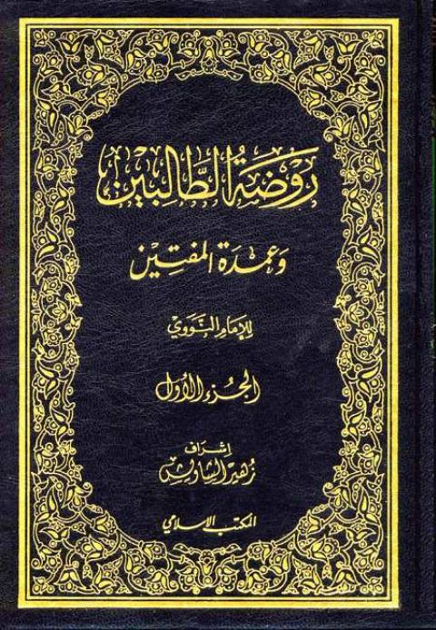

Downloads need an internet connection.
روضة الطالبين وعمدة المفتين
Authors: يحيى بن شرف النووي
Editors: زهير الشاويش
Publishers: المكتب الإسلامي
**▫️ العنوان: روضة الطالبين وعمدة المفتين** ▪️ المؤلف: #يحيى_بن_شرف_النووي ▫️ المحقق: #زهير_الشاويش ▪️ الناشر: #المكتب_الإسلامي ▫️ تاريخ النشر: 1412هـ 1991 م ▪️ بلد النشر: بيروت، #لبنان ▫️ الطبعة: 1 ▪️ عدد الأجزاء: 12 ▫️ الصفحات: 5125 ▪️ نوع الوعاء: #كتاب ▫️ التصنيف الرئيسي: #الفقه_وأصوله ▪️ التصنيف الفرعي: #فقه_شافعي ۪